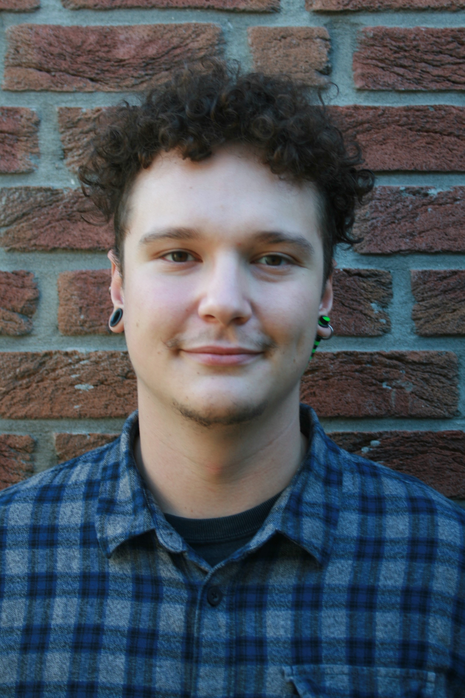
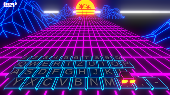

Hi there!
“We live in a universe of freedom and peace. Glued together by a power, an almighty power. But like everything old and lasting, it’s meant to break. Now the days of fear have come, and our cube will collapse. Thus, I have gathered you, my team.” -the Boss
The K.U.P.E team is a team of special mechanics that is sent into the almighty cube to repair it. They have the task to collect all the Items, which will form a special tool needed for the reparation. Unfortunately, the Items are spread all over the 6 sides of the cube and must be collected! But before diving into the danger of portals, spikes and moving platforms the team needs a special training, in which the four or less players are trained to interact with each other as well as using their characters’ unique abilities to master the sides! Grab your best mates, choose your favourite character and get prepared for the cube!
After the universe is saved once, new records in being the fastest K.U.P.E team ever can be set in the “Run Mode”, in which only the 6 main levels are played, and the overall time is counted!
Glennthrìghde, or as they prefer to call themselves, Glenn, is a Fae, but their goal is to live among
humans. Except that part where they tried it, and it didn’t work, because Fae simply don’t work like humans,
especially when it comes to emotions. Now Glenn is trying to fix that using their ability to steal emotions
for themselves as long as other people feel these emotions. The player controls Glenn in their dream world,
interacts with humans who are trapped in there and solves puzzles to find memories that Glenn can use to
evoke certain emotions to steal them.
Except that part where being human is not as easy as Glenn always thought. It’s a game about emotions and
the denial of emotions, of past regret and pretending, and about how sometimes you have to feel painful
things to be human and alive.
In this project I worked on the dialog system using Articy Draft and general gameplay features. Furthermore I created some shaders for moving backgrounds.
Corruption is a board game enhanced with the use of an app. Your spaceship broke and now you search through this old shipwreck you found luckily but something is weird. Time seems to be working differently here and what is up with this plants growing everywhere?
aaaAAAAdventure is an arcade game collection that uses experimental sound input using the microphone of your pc.
Keyboard Surf Dinosaur Attack was created in a 3 day game jam. you use your whole keyboard to move around and shoot these pesky space dinosaurs.Try it here!
This is your chance! You just got an internship at universe factory! The magic place where solar systems are built, and dreams come true… Rumours say that some dedicated workers even created life… Internety is a buildup mobile game using the gyroscope. Besides the Tamagotchi like gameplay, the game also includes a sweet narrative branching recent issues. We hope our game makes you reflect on reality and has an impact on people’s thoughts. The game can be played from 5 minutes to eternity, so maybe you want to take a swing yourself!Try it here!
During my bachelor thesis and working at the institute for technical acoustics I worked on a plugin which lets you use Virtual Acoustics inside of Unity3D. Some impressions can be found here.(Only in german/paragraph Virtual Acoustics(VA) und Unity mit einer VR-Brille)